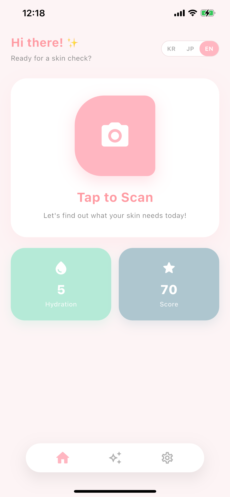
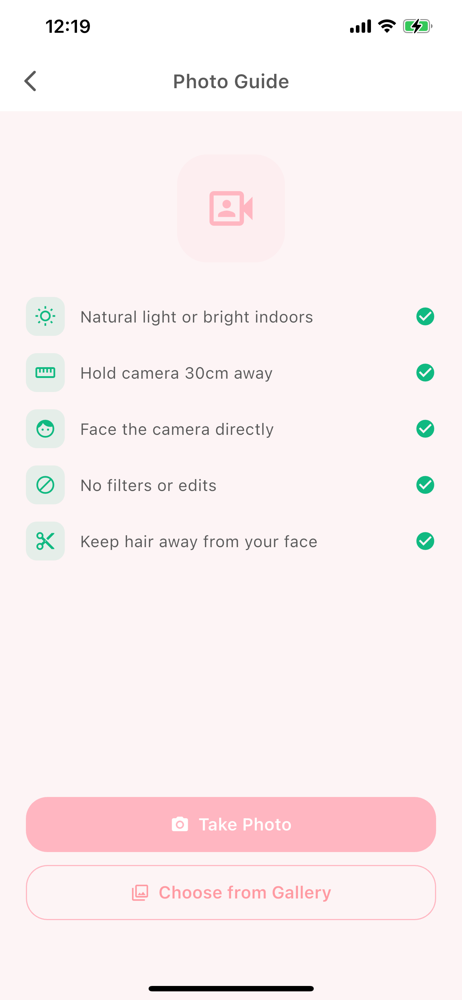
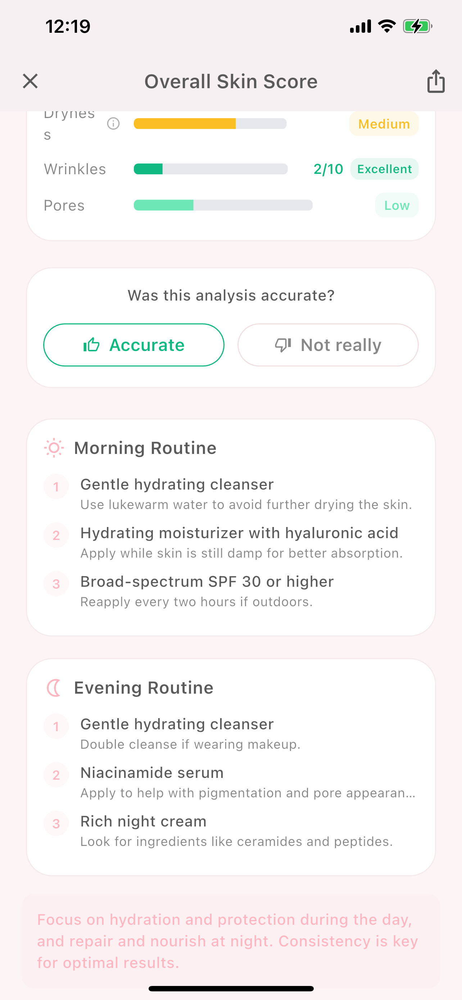

SkinScan
One photo is all it takes.
AI analyzes your skin today and gives you an overall score with a personalized routine.
One photo is all it takes.
AI analyzes your skin today and gives you an overall score with a personalized routine.
SkinScan is an AI skin analysis app that reads your skin from a single selfie. Without expensive measuring devices or a trip to a store, your phone camera checks key concerns — acne, pigmentation, dryness, wrinkles and pores — and gives you an overall skin score from 0 to 100. It turns a quick daily self-check into an easy habit for tracking how your skin changes over time.
It's simple to use. Tap the capture button on the home screen and face the camera in natural light — a quick analysis finishes in about 10 seconds. Want more detail? A precise analysis takes three photos (front, left and right) to detect left-right asymmetry. An on-screen photo guide walks you through lighting, distance and angle so every scan is taken under consistent conditions.
Once the analysis is done, SkinScan shows a score for each concern, compares it against your previous records to reveal the trend, and recommends a morning and evening skincare routine along with ingredients worth looking for (hyaluronic acid, ceramides, vitamin C and more) and ones to avoid. SkinScan is currently getting ready for launch and will arrive soon on iOS and Android.
Skincare that starts with a single scan
Analyze acne, pigmentation, dryness, wrinkles and pores from one photo. A quick front-facing scan takes about 10 seconds.
See your skin at a glance on a 0–100 scale, with per-concern grades that show exactly what needs more care.
Compare against your past records to track how your score changes — see the effect of your skincare in data.
Capture front, left and right photos to detect left-right asymmetry. A more detailed result, still fast.
Get a morning and evening routine tailored to your skin, plus ingredients to look for and ones to avoid.
Supports Korean, English and Japanese, with an in-app language switch you can toggle any time.
A soft, intuitive pink-toned UI

Home

Photo Guide

Skin Score
No complicated setup — just tap capture. The photo guide walks you through lighting, distance and angle so every scan is consistent.
Alongside the overall score, SkinScan grades acne, pigmentation, dryness, wrinkles and pores, and compares against past records to show whether things are improving.
Based on your results, SkinScan suggests a morning and evening routine and lays out ingredients worth using and ones to avoid.
Everything you want to know about SkinScan
Take a face photo and the AI analyzes acne, pigmentation, dryness, wrinkles and pores, showing a 0–100 overall score plus per-concern grades. A quick single-photo scan takes about 10 seconds, and the 3-photo precise scan finishes quickly too.
Use natural light or a bright room, hold the camera about 30cm away, face it directly, avoid filters or edits, and keep hair away from your face. The in-app photo guide walks you through each of these.
No. SkinScan is a wellness app for beauty and self-care reference only. It is not a medical device and does not diagnose or treat conditions. If you suspect a skin condition, please see a dermatologist.
SkinScan supports Korean, English and Japanese, switchable inside the app. It is being prepared for release on iOS and Android.
SkinScan is currently getting ready for launch. Watch the MonoApps News page to hear about the release first.